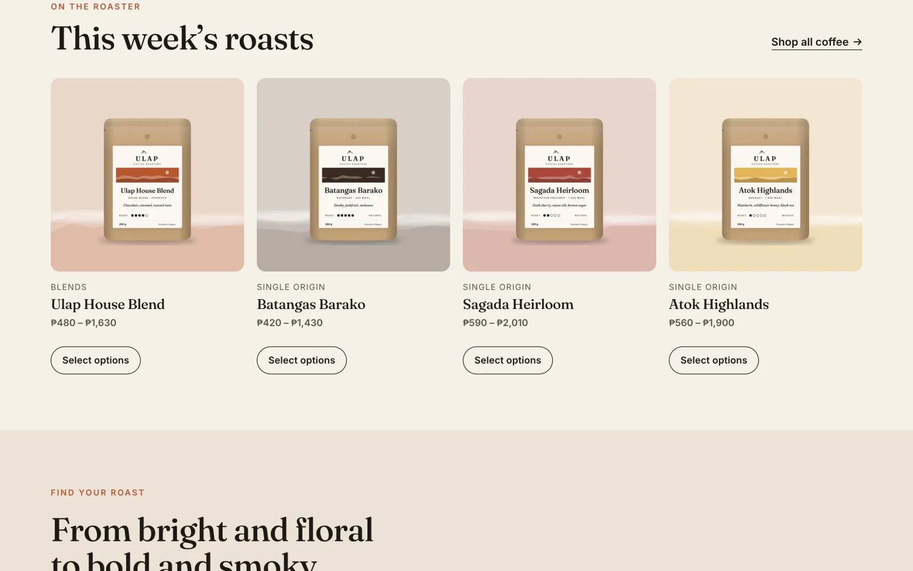
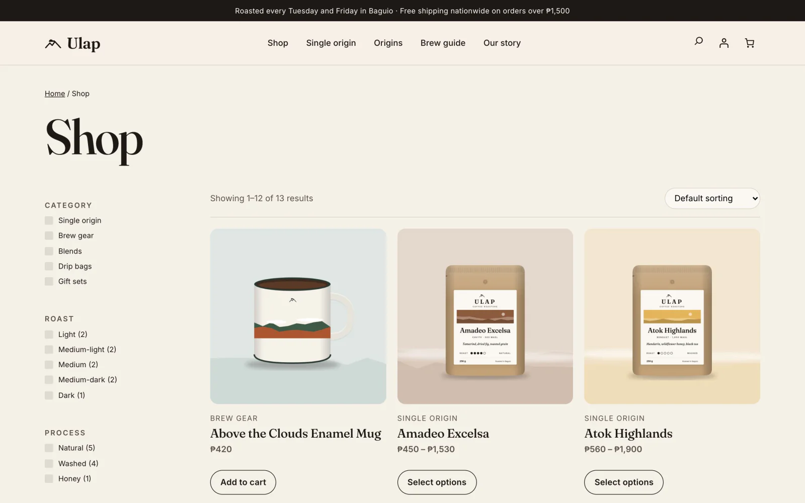
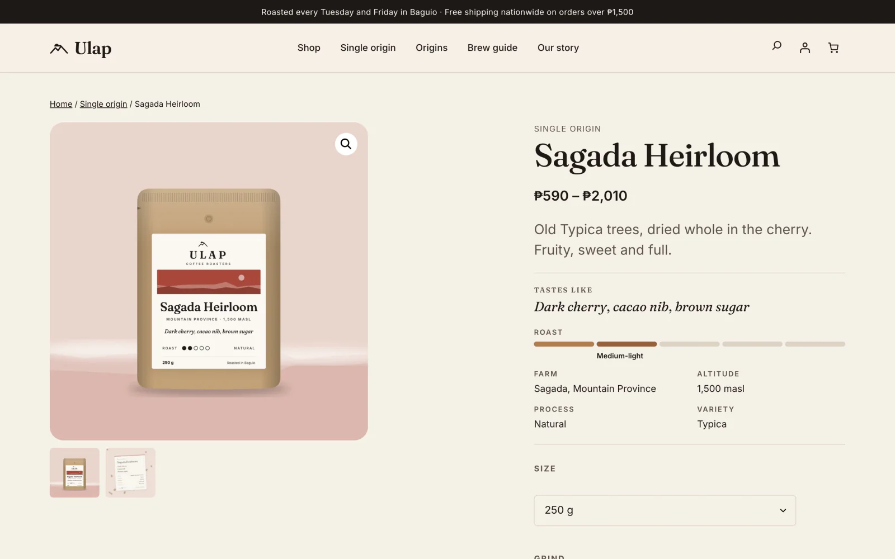
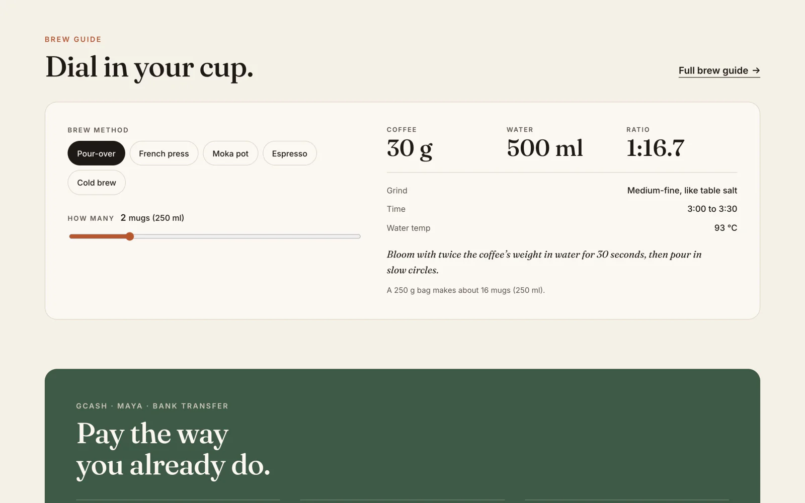
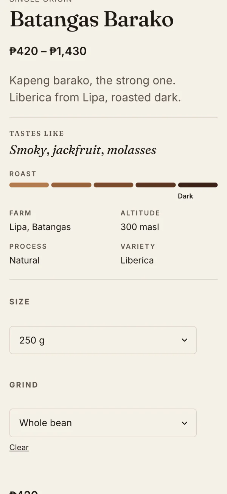

Custom themes
From your Figma or Photoshop files to a block theme your team edits without breaking it.
WordPress · WooCommerce · PHP
Custom themes, WooCommerce stores and plugins, written by hand. No page builder and no pile of plugins: a fast site your team edits in the normal WordPress editor, and checkout code you can actually read.
The whole store, checkout and wp-admin run in your browser. Nothing to install.
Case study
A complete WooCommerce store for a Philippine specialty roaster, built from an empty folder: the theme, two plugins, the product art and the store setup. Ulap is a concept brand I made to show the whole stack. Every line of code is real, and you can open the running store yourself.

01 · Theme
A block theme with its design in theme.json: colours, type scale, spacing and fonts in one file. Every homepage section is a block pattern, so the owner changes words, products and photos in the WordPress editor and the design holds.

02 · Catalogue
Origin, roast and process are real WooCommerce attributes, so the shop filters, counts and sorts them with WooCommerce’s own blocks. No filter plugin. Each coffee has one variation per bag size; grind is a free choice, so it never touches the price.

03 · Custom block
A server-rendered block reads each coffee’s attributes and draws the tasting notes, a roast meter and the farm facts. The owner fills in normal product fields; the page lays itself out. Brew gear has no roast, so the block quietly steps aside.
block.json + render.php, no build stepPlugin · Transfer Pay for WooCommerce
Most Philippine shops already sell by transfer. The hard part is matching screenshots to orders in Messenger. This plugin turns it into a checkout: the shopper sees exactly what to send, uploads the receipt on the order page, and the shop verifies it in one click.
Emails
Three branded emails, built as real WooCommerce email classes, so the shop edits them under WooCommerce → Settings → Emails like any other.
Uploads check the nonce, the order key, the file’s real type and size. Receipts live in a private folder and only reach shop staff through a permission check.
Each order claims its “how to pay” email before sending; a failed send gives the claim back. All three emails are editable in WooCommerce → Settings → Emails.
Action Scheduler cancels orders nobody paid for after 48 hours and puts the stock back. Orders with a receipt waiting are never touched.

04 · Interactivity API
Built on WordPress’s own reactive layer. The server renders the full recipe, so it reads right before any script loads; then every tap updates the dose, water, grind and time instantly. Most WordPress developers haven’t touched this API yet.
viewScriptModule with derived state
05 · Phone first
Every template is designed at phone width first: tap targets, the filter drawer, a sticky header that stays out of the way, and no sideways scroll anywhere.
Read the code
Short excerpts from the build. The full source for the theme and both plugins comes with every project, commented and yours to keep.
Why not a page builder?
Already on WordPress?
Most WordPress sites break slowly: a plugin falls behind, a backup quietly stops, the checkout gets slower every month. A care plan catches all of it before your customers do, on sites I built and on sites I didn’t.
Ask about a care planClient work
Three e-commerce brands in the US and Australia I’ve maintained and grown on WordPress and WooCommerce. One still has me on call. Their names are confidential, so logos, names and contact details are blurred.
For WordPress clients
From your Figma or Photoshop files to a block theme your team edits without breaking it.
Products and variations, shipping zones, GCash, Maya and bank transfer, branded order emails.
Payment flows, custom blocks, REST endpoints, webhooks, CRM and n8n automations.
Slow pages, broken checkouts, plugin clean-ups and PHP upgrades on an existing site.
Staging, SSL, DNS, backups and email that lands, on cPanel or managed hosting.
Updates, backups and uptime checks every month, so the site keeps running.
Try it
The live store runs WordPress, WooCommerce and wp-admin inside your browser through WordPress Playground. Place an order, upload a receipt, then switch to wp-admin and verify it yourself. Nothing you do there touches a real shop.
First load takes about 30 seconds while WordPress boots in your browser.